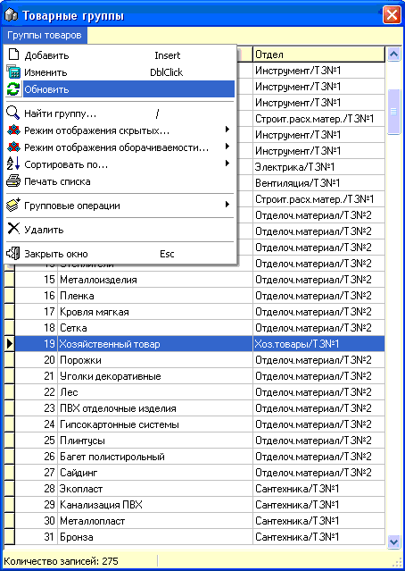

Справочник товарных групп - второй, после
товарного, по значимости справочник в программе. Вообще, при начале работы с
программой первое, что необходимо сделать - это составить справочник товарных
групп. Разные предприятия по разному определяют количество и степень
дифференциации товарных групп, обычно нормальным есть около 50...350 групп, но
не более 1000, хотя технически количество записей в этом справочнике, как и в
товарном, практически не ограничено.
 На рисунке приведено
окно справочника с открытым меню.